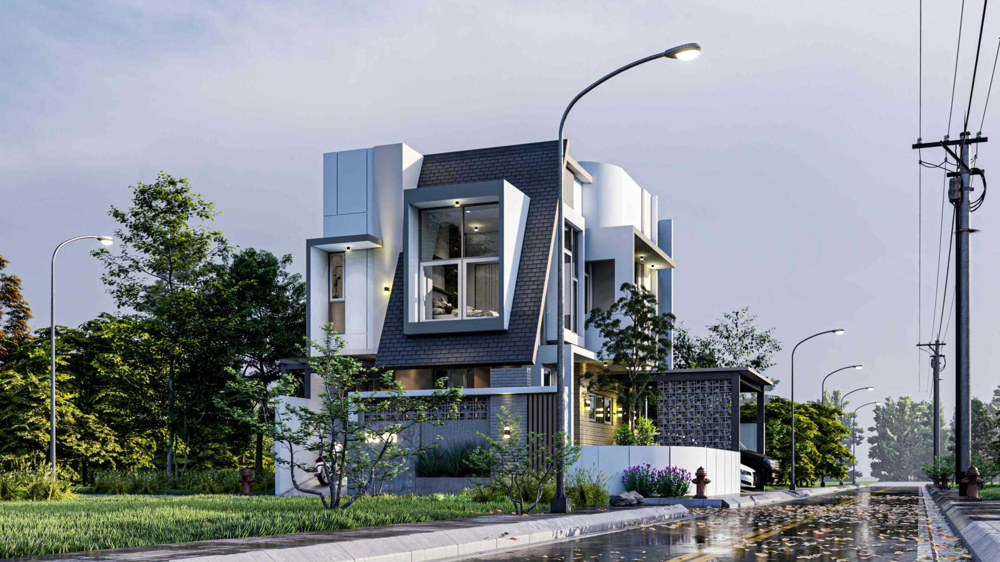

Kontraktor Rumah Modern & Profesional
Bangun rumah impian dengan sistem kerja yang rapi dan transparan.
Rafid Kontraktor membantu proses bangun rumah, desain rumah, renovasi, interior, penyusunan RAB, hingga pendampingan proyek dengan tampilan kerja yang lebih modern, tertata, dan mudah dipercaya oleh calon klien.
- 120+ Proyek Rumah baru, renovasi, dan interior
- RAB Transparan Per item pekerjaan dan material
- Design to Build Satu alur, satu koordinasi, lebih efisien

Layanan Utama
Semua kebutuhan proyek rumah dalam satu tim kerja.
Dari rumah baru hingga pembaruan interior, setiap layanan kami dirancang supaya proses lebih jelas, hasil lebih rapi, dan keputusan klien lebih mudah.
Jasa Bangun Rumah
Mulai dari lahan kosong sampai rumah siap huni dengan sistem pelaksanaan bertahap dan terukur.
Pelajari layananJasa Desain Rumah
Denah, fasad, gambar kerja, hingga visual 3D yang memudahkan proses membangun dan estimasi biaya.
Pelajari layananJasa Renovasi Rumah
Peremajaan tampilan, perubahan layout, upgrade fungsi ruang, dan penanganan area rusak secara tepat.
Pelajari layananInterior Rumah
Konsep interior, custom furniture, penataan pencahayaan, material, dan pengalaman ruang yang nyaman.
Lihat detailPengawasan Proyek
Kontrol kualitas, dokumentasi progres, update mingguan, dan monitoring item pekerjaan secara disiplin.
Lihat detailRAB & Konsultasi Teknis
Estimasi biaya pekerjaan, spesifikasi material, dan pemetaan strategi proyek sesuai target anggaran.
Cek contoh RAB
Mengapa Memilih Kami
Lebih dari sekadar membangun, kami membangun rasa tenang bagi klien.
Website ini dirancang agar calon klien langsung memahami kualitas kerja, sistem komunikasi, dan nilai profesional yang Rafid Kontraktor tawarkan sejak awal.
Brief proyek yang terstruktur
Kami mulai dari kebutuhan ruang, gaya, target biaya, lalu menyusunnya menjadi alur kerja yang jelas.
Visual konsep yang komunikatif
Desain dan presentasi proyek disiapkan agar mudah dipahami oleh klien maupun tim pelaksana.
Pelaporan progres yang terbuka
Setiap tahapan pekerjaan dapat dipantau sehingga keputusan lapangan lebih cepat dan tepat.
Fokus pada kualitas akhir
Detail finishing, fungsi ruang, dan kenyamanan penghuni menjadi prioritas sampai serah terima.
Portofolio Unggulan
Beberapa tipe proyek yang menunjukkan karakter kerja Rafid Kontraktor.
Tidak hanya fokus pada hasil visual, kami juga menampilkan fungsi ruang, kualitas material, dan pendekatan pelaksanaan proyek yang sesuai kebutuhan penghuni.

Rumah Tinggal Modern Tropis
Desain fasad tegas, sirkulasi cahaya alami maksimal, dan penjadwalan konstruksi bertahap.

Residence Minimalis Elegan
Konsep rumah keluarga dengan ruang komunal luas, fasad bersih, dan interior yang hangat.

Renovasi Total & Upgrade Fasad
Pembaruan layout, struktur area basah, dan wajah bangunan agar tampil lebih modern dan bernilai.
Contoh RAB
Rencana anggaran dibuat detail agar keputusan proyek lebih aman.
Kami menyiapkan RAB yang membantu klien memahami porsi biaya struktur, arsitektur, finishing, interior, dan pekerjaan pendukung secara lebih rasional.
Rumah 1 Lantai - 120 m2
- Struktur & pondasi
- Dinding, atap, dan plafon
- Finishing lantai dan cat
- MEP dasar dan sanitasi
Rumah 2 Lantai - 250 m2
- Struktur bertingkat & tangga
- Fasad modern dan bukaan lebar
- Area servis dan carport
- Finishing menengah hingga premium
Renovasi & Interior
- Upgrade dapur dan kamar mandi
- Perubahan layout ruang
- Custom kabinet dan backdrop
- Peningkatan estetika dan fungsi
Kepuasan Klien
Kepercayaan datang dari hasil kerja yang terasa nyata.
Testimoni berikut menggambarkan bagaimana klien menilai kualitas komunikasi, detail pengerjaan, dan rasa aman selama proyek berjalan.
“Dari awal saya suka karena penjelasannya runtut. RAB mudah dipahami, progres juga rapi, dan hasil fasad rumah jadi jauh lebih elegan dari bayangan awal.”
“Tim Rafid Kontraktor membantu sekali saat renovasi rumah lama. Bukan cuma bagus, tapi fungsi ruang jadi lebih nyaman untuk keluarga dan tetap sesuai budget.”
“Saya merasa terbantu karena desain, pembangunan, sampai interior bisa dikawal oleh satu tim. Komunikasi jadi lebih singkat dan hasil akhirnya konsisten.”
Form Konsultasi
Kirim kebutuhan proyek Anda dan biarkan kami bantu memetakannya.
Form ini cocok untuk calon klien yang ingin mulai dari kebutuhan umum. Untuk respons lebih cepat, tombol WhatsApp juga tersedia setelah pengisian.
Mulai Sekarang
Wujudkan rumah yang lebih bernilai bersama Rafid Kontraktor.
Bila Anda ingin website kontraktor yang terasa profesional sekaligus meyakinkan bagi calon klien, halaman ini sudah menyiapkan alur konsultasi, RAB, portofolio, dan tombol WhatsApp yang siap dipakai.